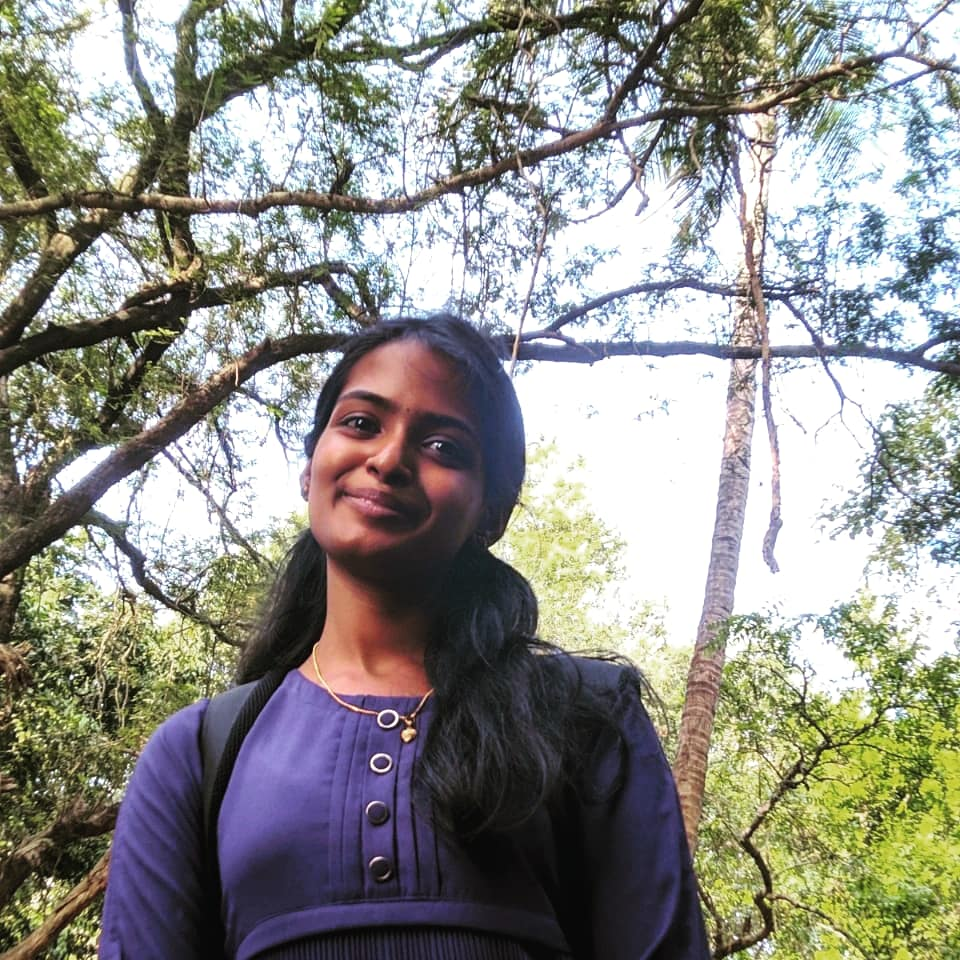

Miss APARNA C H currently pursuing Btech in Computer Science Engineering at Government Engineering College Thrissur.
As a keen learner, I always try to experiment in new fields be it tech or non-tech. I am a Machine Learning Enthusiast and is currently
exploring the field using Python programming language. Web development is another chosen interest for me . Other than technical fields, I also engage in
exploring other arenas like Content Development , Marketing . In addition I am focusing on my managerial abilities to lead a future team.